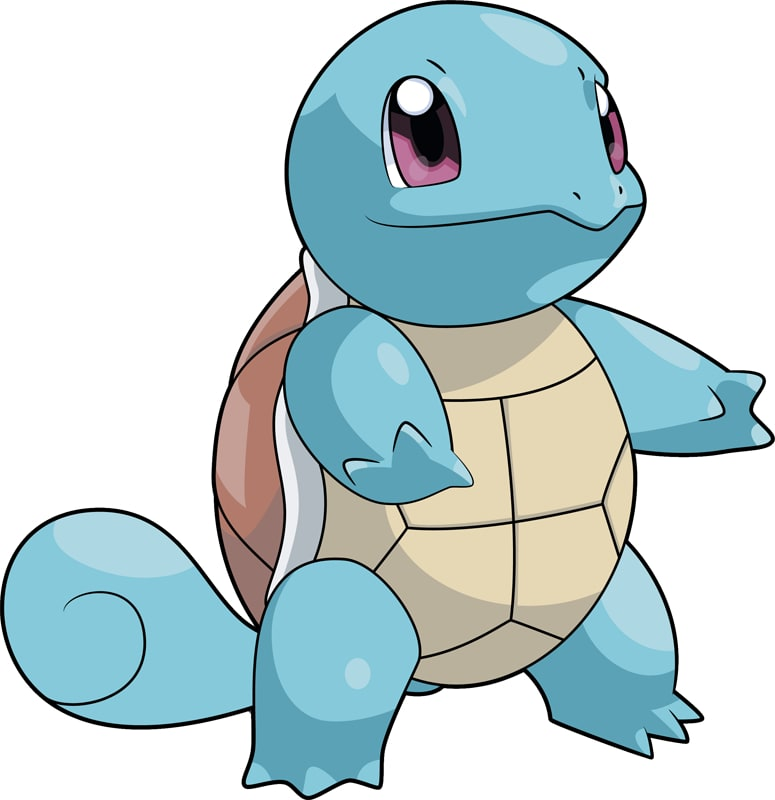

| Home | Introduction | Dictionary | Video | Map |
|  | |
| Type | Ability |
| Water | Torrent |
| Height | Weight |
| 1'08" | 19.8 lbs |
Squirtle is a small Pokémon that resembles a light blue turtle. While it typically walks on its two short legs, it has been shown to run on all fours in Super Smash Bros. Brawl. It has large eyes and a slightly hooked upper lip. Each of its hands and feet have three pointed digits. The end of its long tail curls inward. Its body is encased by a tough shell that forms and hardens after birth. This shell is brown on the top, pale yellow on the bottom, and has a thick white ridge between the two halves.
Squirtle's shell is a useful tool. It can withdraw into the shell for protection or for sleeping, and its grooved, rounded shape helps to reduce water resistance when this Pokémon swims. Squirtle can spray foamy water from its mouth with great accuracy. In the past, Skull Bash was its signature move. Squirtle is scarce in the wild, although it can be found around small ponds and lakes. The anime has shown that it can be found living on secluded islands with other members of its evolutionary line.